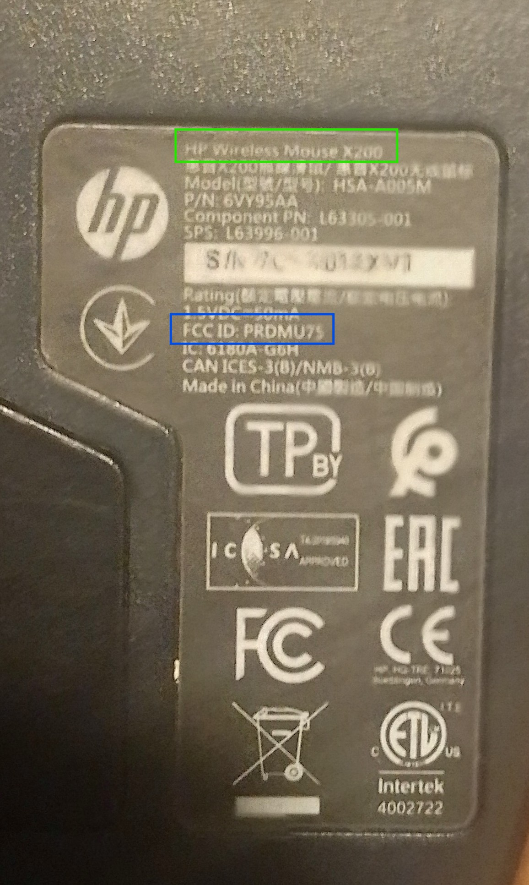
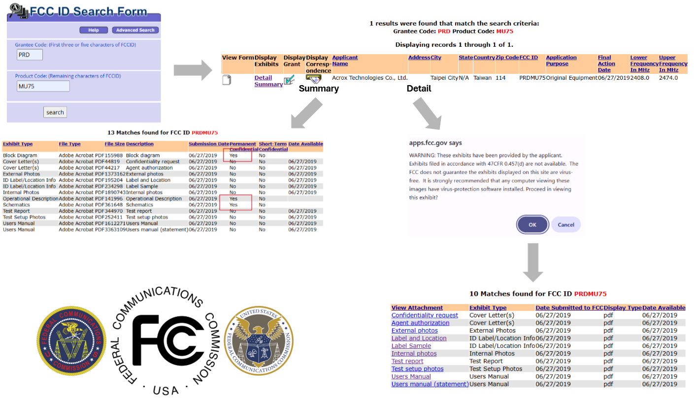
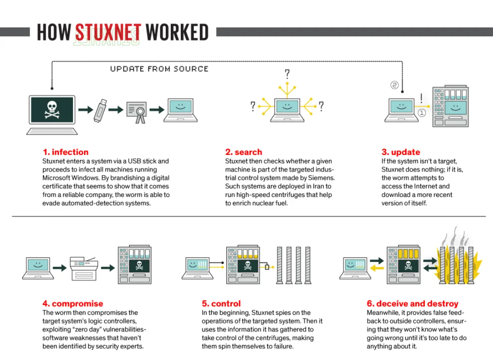

Table of contents |
|---|
| Abstract |
| Introduction |
| Analysis and discussion |
| References |
Could this be the problem?
Criminals have thought up ways, for a variety of reasons, of gaining unauthorised access into about anything for centuries. This overarching threat is ever-present in a modern world heavily reliant on electronic devices for means of finance, communication, data storage, entertainment, and general productivity. However, despite the extensive good these devices have brought and continue to bring society, their greatest strength in being electronic (as opposed to mechanical) is paradoxically their greatest weakness, with several recent attacks on internet connected devices (IoT devices) demonstrating this, and the potential consequences of these type of attacks resulting in damage to expensive equipment or even loss of life (Papp et al., 2019). The aim of this article is to present the means of discovering and exploiting electronic devices, as well as emphasising the need for strong encryption through the evaluation of a past security breach that resulted in the destruction of thousands of industrial machines.
The first step in tricking an electronic device into doing what we want is first understanding how it 'thinks' and how it 'acts'. A deep understanding of a device's inner workings aids in finding potential design flaws that can be exploited to alter its operation, often, but not always, for nefarious means. Such an understanding is gained through the process of hardware inspection, outlined in the two main stages below.
The primary aim of this stage is to obtain as much publicly available information on the target device as possible, making use of the internet as well as model and serial numbers printed on the device to identify datasheets and manuals with valuable information on the device's specifications. It's also important to note that all wireless devices used and or produced in the US have an FCC ID printed on them which can be used on the FCC database site to obtain information surpassing datasheets. For further inspection it's also vital to identify: the power requirements of the device, more specifically, polarity, current and voltage levels, as well as any tamper protection to avoid causing irreparable damage to the device. Below is a demonstration of this stage in action using my HP X200 Wireless mouse.

Boxed in green and blue in Figure 1., is the mouse model and FCC ID, respectively. As mentioned, we can use the identified FCC ID of PRDMU75 on the FCC database site to find detailed technical information on the mouse such as component disassembly, test reports among other specs vital in understanding the workings of the mouse. Figure 2. below outlines the FCC ID search process.
Note how the Block Diagram, Operational Description and Schematics from the summary are missing in the detailed list. As hinted by the apps.fcc.gov window alert, the three omitted files are classified, likely at the request of HP to make reverse engineering more difficult, protecting against replicas being made and sold for profit. Despite this, the available files still provide useful information for exploits, notably using the technical information surrounding the operational frequency which is in Bluetooth range (2400-2483.5MHz) (Bureau Veritas Consumer Products Services, 2019). Due to the missing schematics, any practical reverse engineering would need to be carried out using the second stage of the hardware inspection process.
Figure 1. The back of a HP X200 wireless mouse

Figure 2. A diagram displaying the FCC search process
This is the most technical stage of hardware inspection as it often requires some background in electrical engineering (Papp et al., 2019), as well as disassembling the target device. For ease of reassembly photos and notes must be taken throughout the process. Once opened, the target device's chips, pins and interfaces can be identified and, with the aid of web databases, the specific functions of the components, like memory for example, can be found. Interfaces (communication interfaces) are commonly focused on by bad actors as they are the mechanism through which the components of a system exchange information. This means that interception and replacement of transmitted binary information (code) can 'fool' a device given its operation is based off binary instructions passed between its components. This security issue is addressed using public-key cryptography, more specifically with digital signatures which act as a means of information validation in order to prevent the execution of modified code. The concept of public-key encryption is briefly summarised below.
Public-key encryption is a cryptographic system which uses a pair of mathematically linked keys (public and private) to encrypt and decrypt data respectively, with a key simply being a string of data acting like a password to lock or unlock encrypted information (IBM, 2025). Digital signatures make use of this system by enabling senders to sign information with their private keys and anyone with the public key to both confirm the sender's identity, as well as the data's integrity (IBM, 2025) which proves to be crucial when securing industrial machines running on Programmable Logic Controllers (PLCs), a lesson learned after Stuxnet.
Stuxnet is a malicious computer virus which resulted in the destruction of roughly 1,000 Iranian uranium enrichment centrifuges between 2009 and 2010 and was the first major case of cyber-attack induced industrial destruction. This catastrophe can largely be attributed to security faults in the Siemens S7 PLCs that controlled the centrifuges, more specifically, the absence of digital signatures in their communication interface (S7comm) to verify code integrity. Without this, as well as other encryption methods, the PLCs ran malicious code that spun nuclear centrifuges to failure, setting back the Iranian nuclear regime. It is also important to note that the Iranians believed their facility was safe due to it being air gapped (not connected to the internet) which makes this attack a stark reminder of the power hardware inspection in identifying vulnerabilities. Since the attack, PLCs as well as other critical computer-run infrastructure have adopted digital signatures for software verification.

Figure 3. A diagram displaying the Stuxnet infection process IEE Spectrum
[1] Papp, D., Tamás, K. and Buttyán, L. (2019). IoT Hacking - A Primer. Infocommunications Journal, (2), pp.2-13. doi:https://doi.org/10.36244/icj.2019.2.1. [PDF]
[2] FCC Database - https://www.fcc.gov/oet/ea/fccid
[3] FCC Test report (Bureau Veritas Consumer Products Services (H.K.) Ltd., Taoyuan Branch, 2019) [PDF]
[4] Understanding bluetooth range - Available at: https://www.bluetooth.com/learn-about-bluetooth/key-attributes/range/
[Accessed: 01/12/25]
[5] IBM Think: The 2025 Guide to Cybersecurity - Available at: https://www.ibm.com/think/topics/public-key-encryption#488063996
[Accessed: 01/12/25]